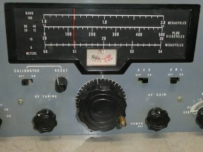
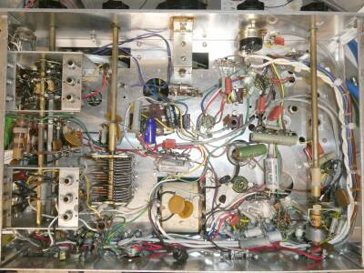
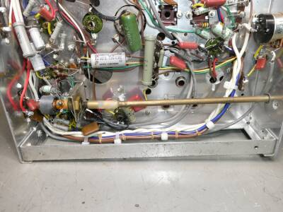
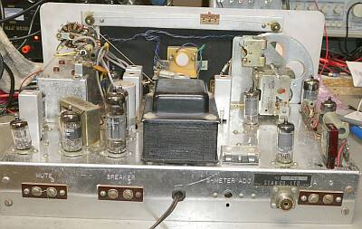
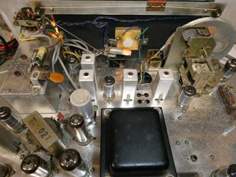
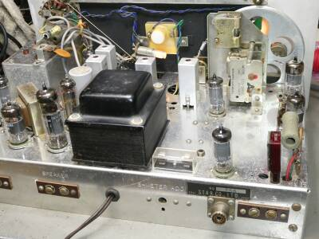
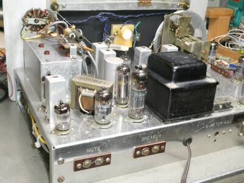
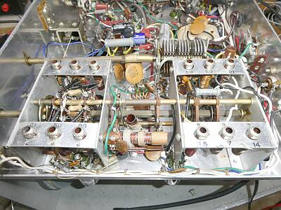

 |
フロントパネル中央部分のアップ
一目で「ＳＴＡＲ」製品と分かるデザインです
同様のデザインで、ＳＲ-５００Ｘというキットがあったように記憶しています
ＳＲ-５５０は、完成品だけの販売だったと思います
|
 |
シャーシ下の様子
整然・・・とは、言えないですね
それでもメーカー完成品です
シャーシはアルミニウム製です |
 |
上写真の右側
方向を９０度変えて写していますが、BFO部です
右のフロントパネルから、リアに配されている発振コイルのダストトコアを直接回して周波数を可変します |
 |
シャーシ上面 リアから
背面に用意されている端子は
アンテナ端子（M型レセプタクルとワイヤーアンテナ用）
外部スピーカー接続端子
スタンバイ端子
調整ＶＲは、Ｓメーターのゼロ点調整用
極めてシンプルです
|
 |
照明は、3ヵ所からこんな感じ
ダイヤル両端と、中央のメーターの裏にランプが配されています
ＶＣが二つ見えています
上に見える小型のものは、ダイヤル校正用のものですダイヤルは、お決まりの糸掛け方式です
１６５０ＫＨｚの第一ＩＦから５５ＫＨｚの第二ＩＦへの変換は、自励発振です（縦に二つ見えているＩＦＴの下側がＯＳＣコイル） |
 |
シャーシ上面
手前右端にマーカー用３.５００MHｚクリスタルが見えます
ヒューズホルダも旧式ですね |
 |
シャーシ上面 もう片方のサイドから
シールドBOXは、５５KHｚ可変フィルタ部
手前は、検波からオーディオ出力です |
 |
こちらが、今回一番の問題を抱えていたＲＦ部です
フロントパネルとリアパネルの間のレールは取り外し写しています
写真右がアンテナ入力コイル群
中間がＲＦ増幅部のプレート側同調コイル群
左が、ＯＳＣコイル群です
奥に見えるＶＣは、ＲＦ部の同調用です
両端が使用されており、中はいわばシールド（壁）です |
|
まずフロントパネルの清掃が大変でした
たばこによる燻製状態だったと思われます
フロントパネルに配されたスライドＳＷ接点の接触が、なかなか改善されません
バンドＳＷなどシャーシ下にあるものは、そこまで酷くはありませんでした
決定的だったトラブルは、７ＭＨｚ帯ＲＦ同調回路と５０ＭＨｚ帯ＡＮＴ同調コイルの２つの配線が、バンドＳＷの端子から外れていたこと
７MHｚ帯については、シャーシあるいはどこかを突っつくと感度が大きく変わる・・・接触不良を疑ってアースベロほかビスの締め直しを行いましたが改善されません
怪しい半田箇所もつけ直してみましたが、改善しません
最終的に分かった原因は、なんとバンドSW端子に同調コイルへの配線がきちんと半田付けされていなかった！！
５０ＭＨｚ帯は、ＯＳＣが発振していないのかと思えるくらいＳＳＧ信号が受信できませんでした（思わずカウンターを用意して、ＯＳＣ発振を確認しました）
いずれも、目視では異常には見えない状態で、ピンセットで配線をつまんでチェックして見つけました
なぜこうなったのかは？？？です
半田付けのやり辛いこと、この上ありませんでした |
|
最終的に得られた受信感度について
いずれもS/N １０ｄＢが得られる条件です
|
ＳＳＢ 信号ON/OFF |
ＡＭ 30%変調 ON/OFF |
| ７.１０ＭＨｚ |
０.５μＶ |
２μＶ |
| １４.１５ＭＨｚ |
０.５μＶ |
２μＶ |
| ２１.２０ＭＨｚ |
０.５μＶ |
２μＶ |
| ５１.００MHｚ |
１μＶ |
５μＶ |
ＡＭについては、仕様通り
ＳＳＢについては、仕様以上の感度が得られました
ただし５０ＭＨｚ帯について、ＳＳＢは実用レベルとは言えません
ＲＦチューンを取るだけで周波数が動きます
上記の感度表記は、信号が聞こえるかどうかというレベルでの値で、ちゃんと復調できるかどうかは別のお話です
この製品の発売当時、５０ＭＨｚ帯でＳＳＢの電波を出す方は、ほぼほぼ「０」だったと思います
７～２１ＭＨｚ帯については、ＳＳＢもなんとか実用になります
ＲＦゲイン調整は微妙です（回路的にも）
５５ＫＨｚの可変フィルタは、それなりに機能しています |